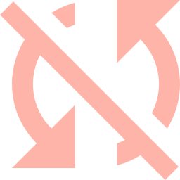
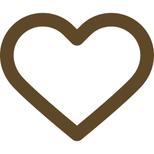
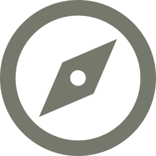

Chaque acquisition rétribue directement les maîtres-artisans et finance les caisses de
solidarité villageoises. Des créations uniques issues de 12 filières patrimoniales certifiées du
Royaume du Maroc.
100%
FAIT MAIN EN ATELIER RURAL
0%
MARGE DE COURTAGE OU NÉGOCE

ÉTHIQUE & RÉPARTITION
Où va précisément votre argent ?
Nous affichons le décompte transparent de chaque dirham pour
garantir la pérennité des coopératives et le respect des droits des
femmes artisanes.
85%
Rémunération Directe
Reversé intégralement au compte
bancaire de la coopérative et de
l'artisane créatrice.

10%
Classe Sociale & Santé
Alimente le fonds mutuel d'entraide
médicale, scolarité et transmission
aux apprenties.
5%
Conditionnement Propre
Papier kraft recyclé, étiquetage de
traçabilité artisanale et emballage
protecteur.

Régions d'Origine
Fés-Meknés & Pré-Rif
Moyen-Atlas & Khénifra
Marrakech-Safi & Essaouira
Sous-Massa & Tiznit
Draa-Tafilalet & Kelaat
Grand Casablanca
Garantie Taawon
Toutes les créations sont accompagnées
d'un certificat d'origine nominatif signé par
la présidente ou le doyen de la coopérative.
Miel d'Euphorbe (Daghmous)
Taawoniya . 500g
180 MAD
Un des miels les plus rares du Maroc, butiné sur les fleurs d'euphorbe des zones arides. Couleur ambrée foncée, goût corsé et légèrement poivré. 100 % naturel, sans aucun ajout.
Miel de thym récolté dans les montagnes de l'Atlas. Arôme intense et herbacé, couleur ambrée profonde. Parfait avec le thé, les tisanes ou à la cuillère.
Miel d'oranger doux et délicatement parfumé, butiné sur les fleurs d'agrumes. Couleur dorée claire, texture fluide. Idéal pour le thé, les yaourts et les desserts. 100 % naturel, sans aucun ajout.
Taawon met en relation directe votre demande avec la coopérative concernée. La pièce est soit
expédiée si disponible dans la réserve de l'atelier, soit façonnée spécialement pour vous selon les
délais traditionnels.